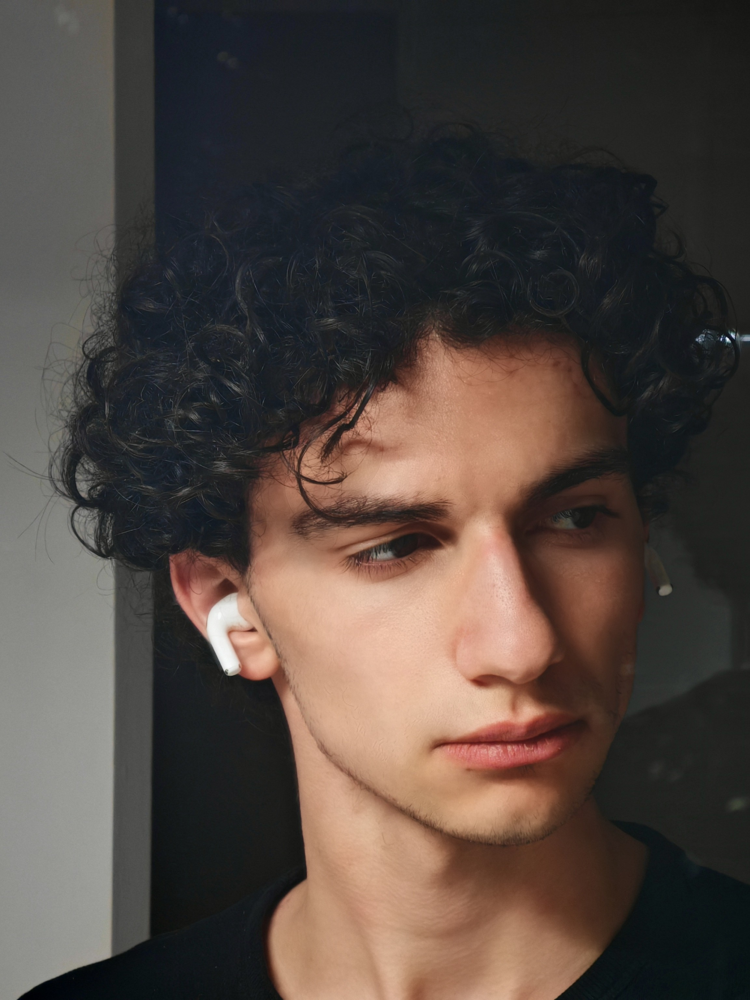

"Il n'y a pas de fin. Il n'y a pas de début. Il n'y a que la passion infinie de la vie. - Federico Fellini"
Actuellement étudiant en Programme Grande École à l'IÉSEG, je cultive mon goût pour l'image et la narration au sein du pôle communication de l'association IÉSEG Studio. Mon objectif : allier vision stratégique et direction artistique pour donner vie à des concepts marquants.
L'œuvre la plus autobiographique — Un réalisateur confronté à ses rêves et ses souvenirs.
1957 · FilmLa force de l'espoir face à la désillusion — Une figure inoubliable.
1960 · FilmLa vie douce et son vertige — Rome comme décor d'un époque.
Mon engagement au sein du pôle communication d'IÉSEG Studio. Un tremplin pour analyser, comprendre et me rapprocher de l'industrie cinématographique où je souhaite évoluer.
Une immersion dans l'univers de la mode, de l'effervescence de la Fashion Week à l'étude des grandes Maisons, avec Dolce & Gabbana comme rêve et inspiration ultime.
Mon projet le plus ambitieux : transformer ces passions en une carrière concrète. Je construis activement mon réseau et mes compétences pour réussir à travailler dans le cinéma ou la haute couture, idéalement à la croisée de ces 2 mondes fascinants.
Un concierge légendaire et son jeune protégé naviguent dans une Europe en plein bouleversement.
2009 · FilmUn renard rusé reprend ses anciennes habitudes, mettant en péril sa famille et sa communauté.
2018 · FilmUn jeune garçon part à la recherche de son chien exilé sur une île poubelle au Japon.
Tennis, football, badminton ou natation. L'effort physique pour se recentrer et garder l'équilibre.
Des goûts divers et variés, rythmés par l'énergie des concerts en live, comme récemment pour l'artiste Arma Jackson.
Une passion dévorante pour le 7ème art, son histoire, sa technique et sa magie visuelle.
L'étude des mannequins à travers des vlogs ou des défilés et des grandes Maisons comme Giorgio Armani, Dolce Gabbana.... Une forme d'expression artistique à part entière.
Un entraînement mental constant qui permet de me reconcentrer et de m'améliorer au fil du temps (Ancien 2600 chess.com).
La création visuelle sous toutes ses formes. Que ça soit déssiner des personnages, paysages ou juste faire du montage.
Une jeune fille s'aventure dans un monde spirituel mystérieux pour sauver ses parents.
2013 · FilmUne nymphe mystique trouvée dans une tige de bambou grandit rapidement et affronte son destin.
2010 · FilmUne famille de minuscules chapardeurs voit sa vie secrète bouleversée par une rencontre inattendue.
Visions · Ambitions · Chimères
"Les visions valent la peine qu'on se batte pour elles. Pourquoi passer sa vie à réaliser les rêves de quelqu'un d'autre ?"
— Ed Wood (1994), Tim Burton
Transformer mon engagement étudiant et ma passion en une carrière concrète dans la production ou la direction artistique du 7ème art.
Intégrer le monde exigeant de la Haute Couture, avec comme aspiration ultime et étoile polaire : la Maison Dolce & Gabbana.
Réussir à fusionner mes 2 univers. Créer des ponts organiques entre la mise en scène cinématographique et l'esthétique pure de la mode.
Une créature inachevée découvre le monde coloré et cruel d'une banlieue américaine.
2005 · FilmUn jeune homme timide épouse par erreur une mariée défunte et découvre le monde des morts.
1994 · FilmLe portrait en noir et blanc du réalisateur le plus passionné, mais aussi le plus incompris.
1 projet, 1 idée, ou simplement envie d'échanger ?